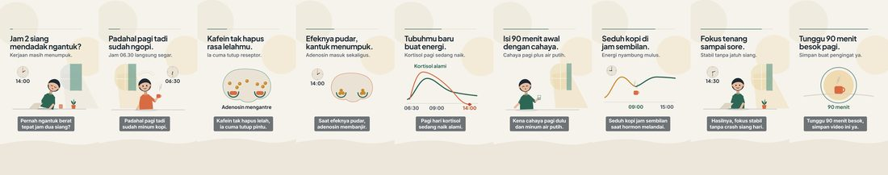
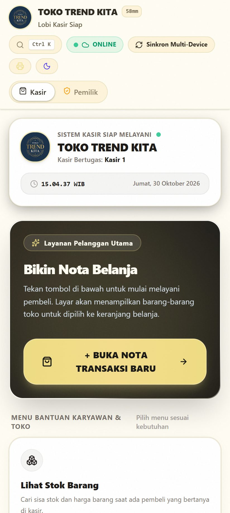
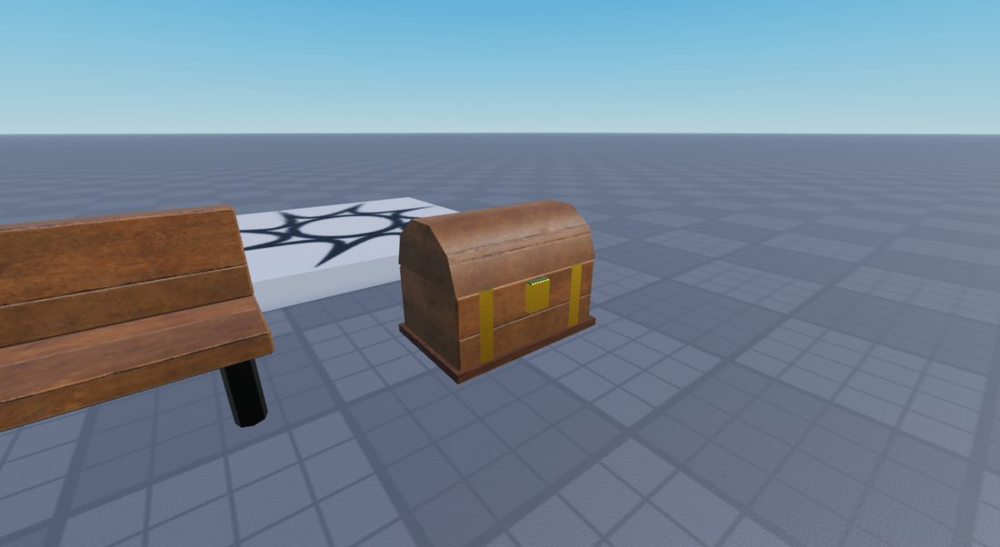
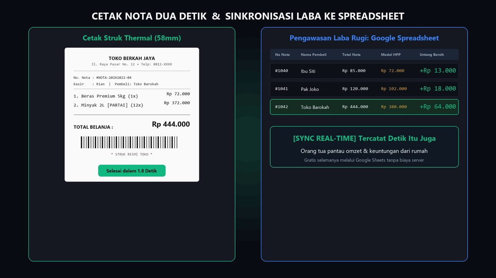
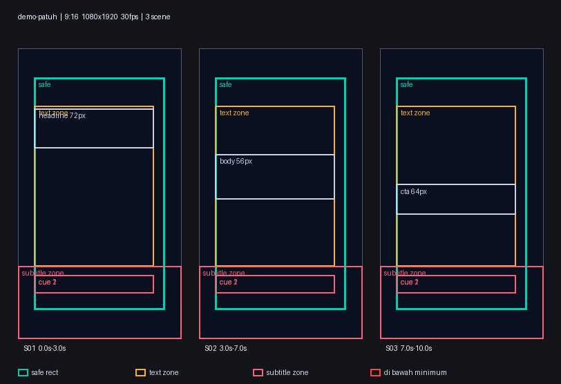

MODUL 01 // MOTIONILO + REMOTION v4 47/47 QA GATE PASSVISUAL MOTION & executable CRAFT.
Racikan 6 modul skill visual otonom (MotionIlo + Remotion v4, GSAP 3.13 + Lenis, UI-Modern v2.1 + Primitives Kit, Three.js r186 WebGPU, dan REA Forensics) ditambah Bonus Setup Arsitektur yang dilengkapi gate mesin nyata (scene_qa.py, storyboard.py, verify.ps1).
IlhamXkyo · Klik untuk sapa!
(01)
Filosofi & Bukti Terukur
Skill AI biasa berhenti sebagai teks imbauan yang mudah dilanggar model. Paket ini memindahkan kebenaran dari sekadar prosa ke gate mesin: setiap koordinat safe-area, kontras warna, radius konsentris, dan keutuhan 305 file diverifikasi secara matematis sebelum hasil diserahkan.
305
FILE TERVERIFIKASI SHA-256 (0 DRIFT)
47
PEMERIKSAAN OTOMATIS SCENE_QA.PY
3 MODE
OBSERVABLE TASK SCOPE (FAST · STD · DEEP)
7 KIT
KOMPONEN PRIMITIF UI-MODERN + PLAYWRIGHT E2E
(02)
Pameran 6 Modul & Bukti Proyek Nyata
Gulir ke Bawah untuk Geser Sinema →
 MODUL 02 // WEB-MOTION CHOREOGRAPHY
60/120 FPS COMPOSITOR
MODUL 02 // WEB-MOTION CHOREOGRAPHY
60/120 FPS COMPOSITOR

MODUL 03 // UI-MODERN v2.1 + DESIGN.MD BUNDLED PRIMITIVES KIT
MODUL 04 // THREE.JS r186 & WEBGPU THREE.TIMER STANDARD
MODUL 05 // REA FORENSIC ENGINE CLEAN-ROOM SYNTHESIS MODUL 06 // BONUS SETUP & ARCHITECT
SHA-256 INSTALLER
MODUL 06 // BONUS SETUP & ARCHITECT
SHA-256 INSTALLER
(03)
In-Browser Executable Workbenches
Jangan Percaya Klaim Teks. Uji Mesinnya Langsung.
Pilih salah satu workbench di bawah ini untuk menjalankan simulasi gate scene_qa.py, melihat perbandingan visual output storyboard.py, menghitung geometri radius konsentris, atau membedah komponen dengan X-Ray /rea.
SIMULASI EKSEKUSI GATE MOTIONILO
$ python scene_qa.py demo-patuh.json
LULUS demo-patuh.json (47 pemeriksaan)
✓ aspect_ratio 9:16 (1080x1920 @ 30fps)
✓ S01..S03 durasi 3.0s, 4.0s, 3.0s (dalam rentang 1.5s..6.0s)
✓ Semua text_rect berada di dalam zona aman TikTok/Reels [108, 380, 900, 1440]
✓ Ukuran font 72px, 56px, 64px (≥ minimum 54px)
✓ Kontras warna #F5F7FF di atas #0B1020 = 17.42:1 (≥ 4.5:1 WCAG AA)
✓ Subtitle CPS = 7.4 char/s (≤ 20.0), 0 cue tumpang tindih
exit code: 0 (AMAN UNTUK RENDER REMOTION)
OUTPUT NYATA STORYBOARD.PY (DEMO-PATUH.PNG)
Klik gambar untuk perbesar

UI-MODERN // HUKUM RADIUS KONSENTRIS
Kalkulator
Kalkulator R_inner = max(0, R_outer - Padding)
Geser slider di bawah untuk melihat bagaimana sudut kartu dalam beradaptasi secara matematis terhadap ketebalan padding luar.
R_inner = 14px (22px - 8px) · Sudut Konsentris Presisi
WEB-MOTION // KURVA FISIKA VS LINEAR
scene_qa.py otomatis menolak animasi linear pada elemen utama. Lihat perbedaan rasanya secara langsung:
❌ LINEAR (DITOLAK GATE QA)linear
✓ UI-MODERN SNAPPY OUTcubic-bezier(0.16, 1, 0.3, 1)
✓ MOTIONILO CALIBRATED SPRINGdamping: 20, stiffness: 120
REA (/REA) // PEMINDAI X-RAY FORENSIK
komponen-target.tsx
SURFACE LAYER
Tampilan visual halaman web target sebelum dibedah oleh mesin forensik REA.
[REA CLEAN-ROOM EXTRACT // 1-PASS]
• surface-card : #13151c | border: 1px rgba(243,239,230,0.13)
• geometry : R_outer=22px, pad=7px -> R_inner=15px
• motion curve : cubic-bezier(0.22, 1, 0.36, 1) @ 50ms
• verification : 0 placeholder, self-contained output
OBSERVABLE TASK MODE // FAST vs STANDARD vs DEEP
Menggantikan tebakan identitas model dengan predikat tugas yang bisa diamati langsung oleh agen di Hydrogen maupun Argon:
mode: fast | standard | deep
• fast (< 1.5k token):
Permintaan ≤ 1 komponen/efek tunggal. Dilarang membuka folder references/. Langsung pakai starter mandiri di SKILL.md.
• standard (1 halaman / video ≤ 30s):
Maksimal memuat 1-2 file referensi spesifik yang relevan.
• deep (Produksi Penuh + Gate Mesin):
Multi-scene / multi-section. Wajib menulis manifest.json dan lulus gate scene_qa.py, storyboard.py, & verify.ps1.
(04)
Isi Paket Google Drive & Instalasi Otomatis AI
Siap Taruh di Drive. AI Pembeli yang Pasang Sendiri.
Klik masing-masing modul di bawah untuk mengintip isi file dan skrip verifikasi SHA-256 yang sudah dibungkus di dalam paket Google Drive.
Perintah Instan untuk Dikirim Pembeli ke AI-nya:
"Tolong baca file 00-PANDUAN-UTAMA-UNTUK-AI-DAN-PEMBELI.md di folder ini, lalu jalankan instalasi seluruh skill dan bonus setup-nya ke direktori konfigurasi Antigravity milikku serta verifikasi hasilnya dengan verify.ps1."
Hasil Eksekusi Otomatis:
$ powershell -ExecutionPolicy Bypass -File ./06-Bonus-Setup-Utama-Arsitektur-Global/install-all.ps1
Instalasi selesai. Menjalankan verifikasi SHA-256 (verify.ps1)...
VERIFY PASS: 305/305 file cocok 100% (SHA-256 verified, 0 missing, 0 drift).